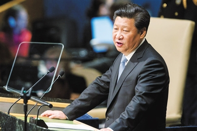

中间为主要内容的双飞翼布局

据联合国官微 当地时间28日，第70届联合国大会一般性辩论在纽约联合国总部开幕，中国国家主席习近平在大会上作一般性辩论发言。习近平表示，中国永远不会走霸权、扩张和扩展势力范围的道路；中国呼吁发达国家履行降低有害排放物水平的义务。不到20分钟的演讲，约有十次被观众席中的掌声打断。
习近平表示，历史是面镜子，以史为鉴，才能避免重蹈覆辙。对历史我们要心怀敬畏，心怀良知。历史无法改变，但是未来可以塑造。铭记历史，不是为了延续仇恨，而是要引以为戒。传承历史不是为了纠结过去，而是为了开创未来，让和平的星火代代相传。
是否溢出是否溢出是否溢出是否溢出是否溢出是否溢出是否溢出是否溢出是否溢出是否溢出是否溢出是否溢出是否溢出是否溢出是否溢出是否溢出是否溢出是否溢出是否溢出是否溢出是否溢出是否溢出是否溢出是否溢出是否溢出是否溢出是否溢出是否溢出是否溢出是否溢出是否溢出是否溢出是否溢出是否溢出是否溢出是否溢出是否溢出是否溢出是否溢出是否溢出是否溢出
是否溢出是否溢出是否溢出是否溢出是否溢出是否溢出是否溢出是否溢出是否溢出是否溢出是否溢出是否溢出是否溢出是否溢出是否溢出是否溢出是否溢出是否溢出是否溢出是否溢出是否溢出是否溢出是否溢出是否溢出是否溢出是否溢出是否溢出是否溢出是否溢出
右边为主要内容的双飞翼布局
前端攻城狮除了技术还要掌握与替他类别的搭配，比如UI交互设计、原型工具AP、node.js等等，懂得这些绝对是有益无害的，这里整理了前端与其他类别的搭配使用的视频教程，快来学习吧~ 前端攻城狮除了技术还要掌握与替他类别的搭配，比如UI交互设计、原型工具AP、node.js等等，懂得这些绝对是有益无害的，这里整理了前端与其他类别的搭配使用的视频教程，快来学习吧~ 前端攻城狮除了技术还要掌握与替他类别的搭配，比如UI交互设计、原型工具AP、node.js等等，懂得这些绝对是有益无害的，这里整理了前端与其他类别的搭配使用的视频教程，快来学习吧~
前端攻城狮除了技术还要掌握与替他类别的搭配，比如UI交互设计、原型工具AP、node.js等等，懂得这些绝对是有益无害的，这里整理了前端与其他类别的搭配使用的视频教程，快来学习吧~